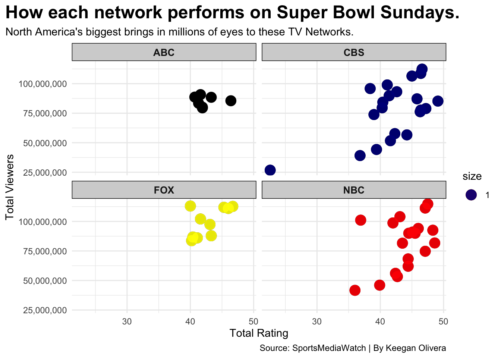
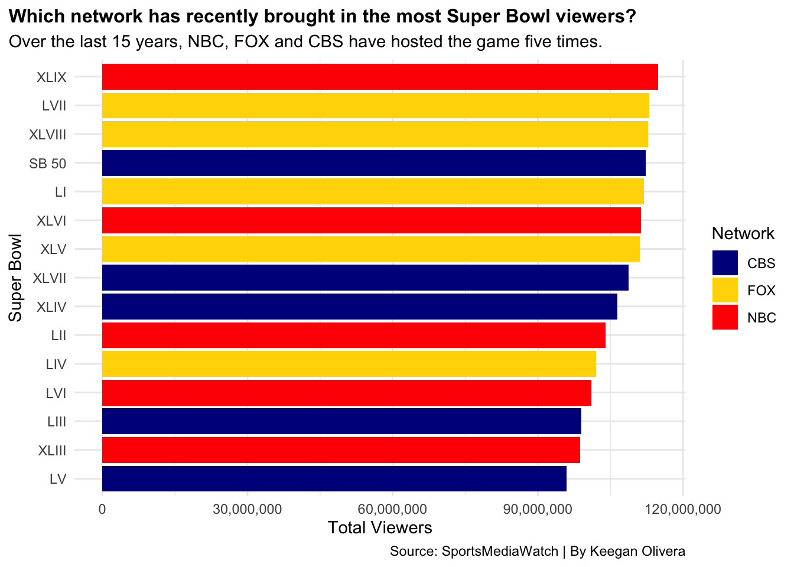
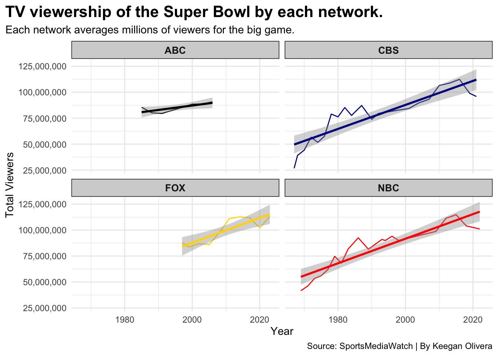

Which TV Network attracts the most viewers for Super Bowls?
NFL
Football
Super Bowl
Author
Keegan Olivera
Published
May 7, 2023
The Super Bowl is widely regarded as the biggest sporting event of the year in the United States. The two final teams remaining in the NFL battle it out for the Lombardi Trophy. Each year, the Super Bowl is the most watched television broadcast in the United States, currently averaging over 100 millions viewers the last decade. With that many people watching the same event, networks love the opportunity to host the big game.
The game has only been hosted on four major TV networks, those being CBS, NBC, FOX and ABC. The first Super Bowl dates back to 1967. Over 50 years later, over 50 super bowls have been broadcasted. With so many games being broadcasted, which TV network performs the best when they host the big game?
Each network has had their fair share of hosting the game. CBS has hosted the most with 21. Following right behind is NBC with 19. FOX has hosted 10 while ABC has hosted the least with 7. Millions of people tune in every year, but some networks outperform others.
Code
library(tidyverse)library(scales)tv <-read_csv("SuperBowlData.csv")fox <- tv %>%filter(Network =="FOX")nbc <- tv %>%filter(Network =="NBC")cbs <- tv %>%filter(Network =="CBS")ggplot() +geom_point(data=tv, aes(x=Rating, y=`Total Viewers`, size=1) )+facet_wrap(~Network)+geom_point(data=fox, aes(x=Rating, y=`Total Viewers`, size=1),color="yellow",alpha=.9) +facet_wrap(~Network)+geom_point(data=nbc, aes(x=Rating, y=`Total Viewers`, size=1),color="red",alpha=.9) +facet_wrap(~Network)+geom_point(data=cbs, aes(x=Rating, y=`Total Viewers`, size=1),color="darkblue",alpha=.9) +facet_wrap(~Network)+scale_y_continuous(labels=comma) +labs(x="Total Rating",y="Total Viewers",title="How each network performs on Super Bowl Sundays.",subtitle="North America's biggest brings in millions of eyes to these TV Networks.",caption="Source: SportsMediaWatch | By Keegan Olivera" ) +theme_minimal() +theme(plot.title =element_text(size =18, face ="bold"),plot.title.position ="plot",strip.text.x =element_text(size=10, angle=0, face="bold"),strip.text.y =element_text(size=20, face="bold"),strip.background =element_rect(colour="black", fill="lightgrey") )

With each network hosting a different amount of games, across a wide span of time, it’s hard to say there’s a clear winner. NBC has had some highly viewed games as well as some of the lowest viewed games.
To get a better idea of which TV network has been bringing in the most viewers, let’s take a look at the past 15 super bowls. Three networks have hosted the game over the past 15 years, 5 games each between NBC, FOX and CBS. ABC hasn’t broadcasted a Super Bowl since 2006 so they’ll be left out here. The last 15 big games have also been the 15 most watched games in the league’s history.
Code
logs <-read_csv("fiveeach.csv")cbs <- logs %>%filter(Network =="CBS")nbc <- logs %>%filter(Network =="NBC")fox <- logs %>%filter(Network =="FOX")ggplot() +geom_bar(data=logs, aes(x=reorder(`Super Bowl`, `Total Viewers`), weight=`Total Viewers`, fill=Network))+scale_fill_manual(values=c("darkblue", "gold", "red")) +coord_flip()+scale_y_continuous(labels=comma)+labs(x="Super Bowl",y="Total Viewers",title="Which network has recently brought in the most Super Bowl viewers?",subtitle="Over the last 15 years, NBC, FOX and CBS have hosted the game five times.",caption="Source: SportsMediaWatch | By Keegan Olivera")+theme_minimal()+theme(plot.title =element_text(size =12, face ="bold"),plot.title.position ="plot")

NBC holds the crown for the most watched super bowl of all time. Super Bowl XLIX between the Seattle Seahawks and New England Patriots averaged a record 114 million viewers back in 2015. However, just because they had the most viewed game of all time, doesn’t mean they average the most.
FOX leads the charge over the past 15 years, averaging 109.6 million viewers per game they host. Looking at the chart, this makes sense. Three of the top five most watched games were hosted by FOX. NBC averaged 105.43 million with CBS, who hosted the most Super Bowls of all time, averaged 104.14 million.
These are only the past 15 years however, we’ve had over 50 years of the big game. Let’s look even deeper.
Code
sb <-read_csv("SuperBowlData.csv")
Rows: 57 Columns: 5
── Column specification ────────────────────────────────────────────────────────
Delimiter: ","
chr (2): Super Bowl, Network
dbl (3): Total Viewers, Rating, Date
ℹ Use `spec()` to retrieve the full column specification for this data.
ℹ Specify the column types or set `show_col_types = FALSE` to quiet this message.
Code
cbs <- sb %>%filter(Network =="CBS")nbc <- sb %>%filter(Network =="NBC")fox <- sb %>%filter(Network =="FOX")abc <- sb %>%filter(Network =="ABC")ggplot() +geom_line(data=cbs, aes(x=Date, y=`Total Viewers`), color="darkblue") +geom_smooth(data=cbs, aes(x=Date, y=`Total Viewers`), method="lm", color="darkblue")+facet_wrap(~Network)+geom_line(data=nbc, aes(x=Date, y=`Total Viewers`), color="red") +geom_smooth(data=nbc, aes(x=Date, y=`Total Viewers`), method="lm", color="red")+facet_wrap(~Network)+geom_line(data=fox, aes(x=Date, y=`Total Viewers`), color="gold") +geom_smooth(data=fox, aes(x=Date, y=`Total Viewers`), method="lm", color="gold")+facet_wrap(~Network)+geom_line(data=abc, aes(x=Date, y=`Total Viewers`))+geom_smooth(data=abc, aes(x=Date, y=`Total Viewers`), method="lm", color="black")+facet_wrap(~Network)+scale_y_continuous(labels=comma)+labs(x="Year",y="Total Viewers",title="TV viewership of the Super Bowl by each network.",subtitle="Each network averages millions of viewers for the big game.",caption="Source: SportsMediaWatch | By Keegan Olivera" ) +theme_minimal() +theme(plot.title =element_text(size =16, face ="bold"),plot.title.position ="plot",strip.text.x =element_text(size=10, angle=0, face="bold"),strip.text.y =element_text(size=18, face="bold"),strip.background =element_rect(colour="black", fill="lightgrey"))
`geom_smooth()` using formula = 'y ~ x'
`geom_smooth()` using formula = 'y ~ x'
`geom_smooth()` using formula = 'y ~ x'
`geom_smooth()` using formula = 'y ~ x'

Each network’s viewers increased over the years, which is obviously a good thing. Averages for each network would vary quite a bit since networks like NBC and CBS were hosting games before TV’s were a common household item. Let’s calculate the averages of the last 10 Super Bowls each network hosted dating back to the early 90s.
FOX: 98.99 Million Viewers NBC: 97.4 Million Viewers CBS: 94.15 Million Viewers ABC (Only 7 Games): 85 Million Viewers
There’s not one dominant network. FOX averages the most viewers with roughly 99 million. NBC and CBS don’t trail too far behind however.